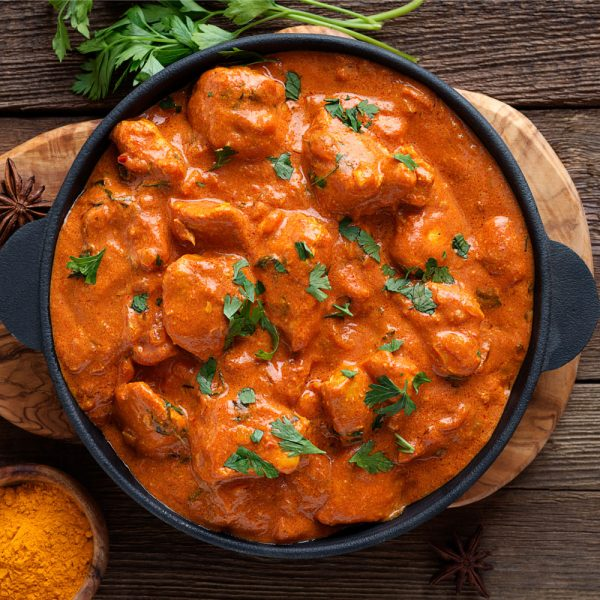

Vegetarian Curry
Light chicken curry
This chicken curry recipe is perfect for a quick meal or can be refridgerated or frozen
Serves 2
Ingredients
- 3 sweet potatoes
- 1 large onion
- 2 cups of peas
- 1 cup of green lentils
- 2 large carrots
- 1 portion of curry roux
- 2 cups or rice
- 2 chicken breasts
- 1 pinch of Salt and Pepper
Steps
- Peal the sweet potatoes and chop into small pieces.
- Peal the carrots and chop into small pieces.
- Remove the skin of the onion and chop into small pieces.
- Slice the chicken breasts into small pieces.
- Add the potatoes, onions and green peas to a large pan and fill with water.
- Add green lentils to a seperate pan and fill with water.
- Add olive oil to a frying pan and heat over medium heat, then add the chicken pieces.
- Bring the pan with potatoes, carrots and peas to the boil then turn down the heat and simmer.
- Add the block of curry roux, salt and pepper to the pan with the potatoes, carrots and peas.
- Bring the pan with green lentils to the boil and then turn down the heat and simmer.
- When the lentils are soft, remove from the heat, strain and add to the large pan.
- When the chicken pieces are cooked through, add to the pan with the potatoes, carrots and peas.
- Add the rice to a seperate saucepan and bring to the boil and then turn down the heat and simmer.
- stir the large pan until the curry roux fully disolves and the sauce is thick.
- Serve the curry over rice.